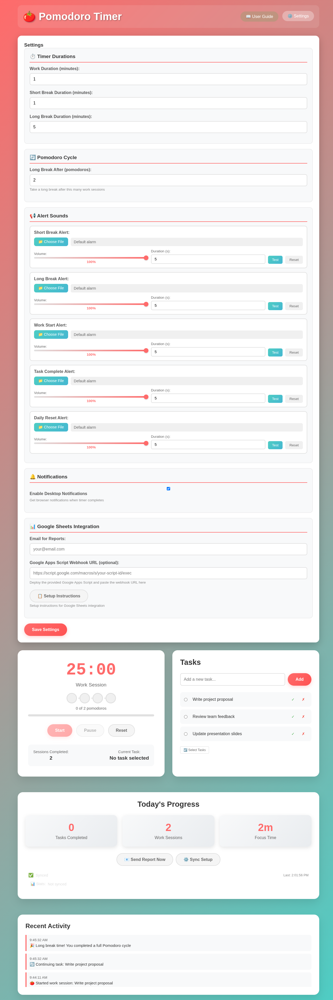

🧠 Why the Pomodoro Technique Works
The Pomodoro Technique, developed by Francesco Cirillo in the late 1980s, is a scientifically-backed time management method that breaks work into focused 25-minute intervals. Here's why it's so effective:
Scientific Benefits
- Reduces Mental Fatigue: Regular breaks prevent cognitive overload and maintain peak performance
- Improves Focus: Short, timed sessions create urgency and eliminate distractions
- Builds Momentum: Completing small tasks creates a sense of accomplishment and motivation
- Combats Procrastination: 25 minutes feels manageable, making it easier to start difficult tasks
- Enhances Time Awareness: You become more conscious of how long tasks actually take
- Prevents Burnout: Mandatory breaks ensure sustainable work patterns
🚀 Getting Started
Quick Start Guide
-
Add Your First Task
Type a task you want to work on in the "Add a new task..." field and click "Add". Be specific about what you want to accomplish.
-
Select Your Task
Click on the task from your list to select it. The selected task will be highlighted and appear as your "Current Task".
-
Start Your First Pomodoro
Click the "Start" button to begin a 25-minute focused work session. The timer will count down and show your progress.
-
Work Focused
Focus exclusively on your selected task. Avoid checking emails, social media, or other distractions during this time.
-
Take Your Break
When the timer completes, you'll get a notification. Take a 5-minute break - stretch, hydrate, or rest your eyes.
-
Complete or Continue
After your work session, decide if the task is complete (✅) or if you need another Pomodoro to finish it.
🔧 Key Features
⏱️ Customizable Timer
Adjust work sessions (default 25 min) and break duration (default 5 min) to match your needs and attention span.
📝 Task Management
Create, organize, and track tasks. Mark them complete when finished or delete them if no longer needed.
📊 Progress Tracking
View real-time statistics: tasks completed today, work sessions finished, and total focus time achieved.
🔔 Smart Notifications
Get desktop notifications when sessions complete, even when the browser tab isn't active.
📧 Daily Reports
Automatically generate and email daily productivity summaries to track your progress over time.
🔄 Data Sync
Optional Google Sheets integration to backup your data and sync across multiple devices.
⚙️ Settings & Customization
Access all configuration options through the Settings panel. Customize timers, set up notifications, configure Google Sheets sync, and more.
Complete settings panel with timer customization, email setup, and Google Sheets integration
📱 Install as Web App
Turn the Pomodoro Timer into a native-like app on your device for quick access and better focus!
📱 Mobile Installation (iOS/Android)
- Open the timer in your mobile browser (Safari/Chrome)
- Tap the share button (iOS) or menu (Android)
- Select "Add to Home Screen"
- Choose a name and tap "Add"
- The app icon will appear on your home screen
💻 Desktop Installation (Chrome/Edge)
- Open the timer in Chrome or Edge browser
- Look for the install icon in the address bar
- Click "Install Pomodoro Timer"
- The app will open in its own window
- Pin to taskbar for quick access
Example: Timer running with 24:37 remaining on "Write project proposal" task
📊 Google Sheets Integration Setup
Automatically sync your productivity data to Google Sheets for backup, analysis, and cross-device access.
Why Use Google Sheets Integration?
- Automatic backup of all your tasks and work sessions
- Access your data from any device
- Create custom charts and productivity reports
- Share progress with team members or accountability partners
- Historical data analysis and trend tracking
Complete Setup Guide
-
Create or Open Your Google Sheet
Open Google Sheets and create a new spreadsheet where you want to track your Pomodoro data. Name it something like "Pomodoro Tracker".
-
Access Google Apps Script
In your Google Sheet, go to Extensions → Apps Script. This will open the Google Apps Script editor.
-
Copy the Script Code
Go back to the Pomodoro Timer, open Settings (⚙️), and click "📋 Setup Instructions". Click the "Copy Apps Script Code" button to copy the integration code.
-
Paste and Save the Code
Delete any existing code in the Apps Script editor, paste the copied code, and save the project. Name it "Pomodoro Sync".
-
Deploy as Web App
Click Deploy → New Deployment. Choose:
- Type: Web app
- Execute as: Me
- Who has access: Anyone
Click Deploy and authorize the app when prompted.
-
Copy the Webhook URL
Copy the web app URL provided after deployment. It should look like:
https://script.google.com/macros/s/your-script-id/exec -
Configure the Pomodoro Timer
Return to the Pomodoro Timer settings, paste the webhook URL in the "Google Apps Script Webhook URL" field, and save settings.
What Gets Synced?
Your Google Sheet will automatically receive:
- Activity Log: All completed tasks and work sessions with timestamps
- Task Sync: Real-time synchronization of your task list across devices
- Settings Backup: Your timer preferences and configurations
Complete step-by-step instructions for Google Sheets integration
💡 Pro Tips & Best Practices
🎯 Task Sizing
Break large tasks into smaller chunks that can be completed in 1-4 Pomodoros. This makes progress more visible and manageable.
🚫 Distraction Management
Keep a "distraction list" nearby. When something pops into your mind during a Pomodoro, write it down to address later rather than breaking focus.
📊 Track Interruptions
If you get interrupted during a Pomodoro, restart it. This teaches you to protect your focus time and reveals interruption patterns.
🔄 Batch Similar Tasks
Group similar tasks (emails, calls, research) into dedicated Pomodoros for better mental context switching.
⚡ Energy Management
Schedule your most important tasks during your peak energy hours, typically in the morning for most people.
📈 Weekly Reviews
Review your daily reports weekly to identify productivity patterns and optimize your schedule.
❓ Frequently Asked Questions
Yes! Click the "Pause" button to temporarily stop the timer. However, traditional Pomodoro technique discourages pausing - it's better to restart if you get interrupted.
Great! Click "✅ Complete Task" to mark it done, or use the remaining time to review your work, plan the next task, or take an early break.
Absolutely! Click the settings button (⚙️) to customize both work session duration (1-60 minutes) and break duration (1-30 minutes) to suit your needs.
Yes! Once loaded, the timer works completely offline. Your data is saved locally in your browser. Only Google Sheets sync requires internet connection.
Make sure you've allowed notification permissions when prompted. You can also check your browser's notification settings and enable them for this site.
Yes! Set up Google Sheets integration to sync your tasks and data across all your devices automatically.
Absolutely! All data is stored locally in your browser by default. Google Sheets integration is optional and only sends data to your own Google Sheet.
Take a real break! Step away from your screen, stretch, hydrate, or take a short walk. Avoid work-related activities to let your mind recharge.
🎉 Ready to Boost Your Productivity?
You now have everything you need to master the Pomodoro Technique! Remember, consistency is key - start with just a few Pomodoros per day and gradually build the habit.